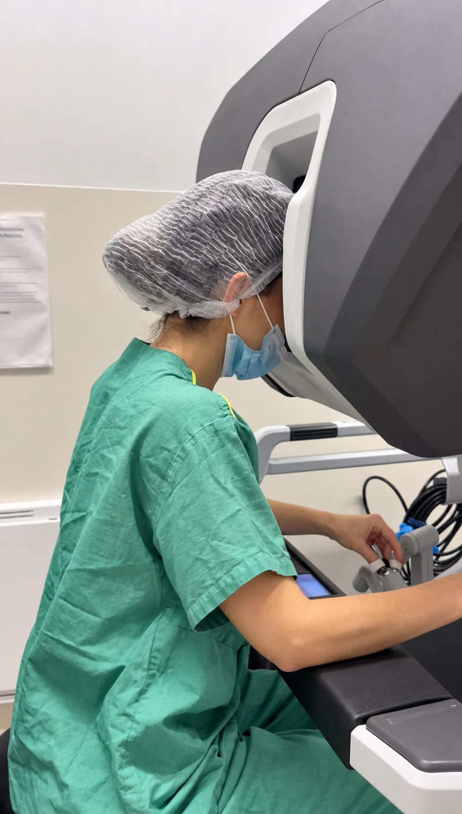
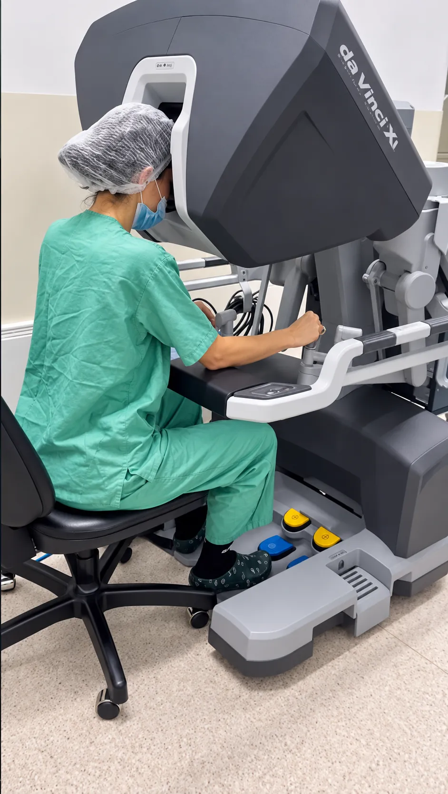
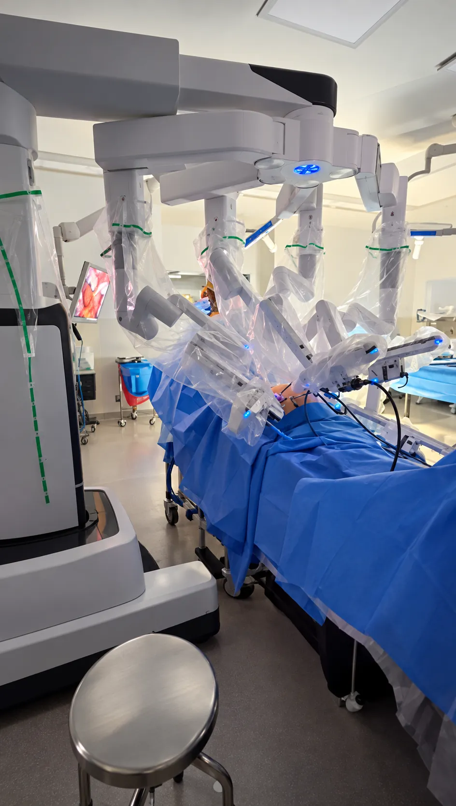

01
WhatsApp ou telefone
Agendamento direto
Você fala com a equipe pelo WhatsApp ou pelo telefone do consultório, em Moema, e escolhe o melhor horário para você.
Ginecologia em Moema · São Paulo
Um cuidado ginecológico que une atenção genuína, conhecimento e tecnologia para acompanhar você em cada fase da vida.
GinecologiaEndometrioseCirurgia robótica
01 / 03
Ciência e sensibilidade
em cada encontro.
“É só uma cólica.” “É normal sentir dor.” Quantas vezes você já ouviu isso?
Mesmo assim, o diagnóstico demora, porque os sintomas são frequentemente ignorados. E cada ciclo sem tratamento é um ciclo de inflamação.
“Adolescente não tem endometriose.” Tem, sim: já diagnostiquei pacientes antes dos 20 anos e operei casos graves em pacientes muito novas. O diagnóstico precoce abrevia o sofrimento, responde perguntas, diminui traumas, não destrói a autoestima e previne infertilidade e lesões graves.
Uma deficiência não diagnosticada rouba qualidade de vida, em cima de uma doença que já cobra caro.
Vale investigar se você tem:
Reposição oral resolve a maioria dos casos.
Cansaço que não passa com fim de semana, disposição que some no meio da tarde, aquela sensação de estar sempre “no modo economia de bateria”… se você tem endometriose, isso provavelmente não é preguiça. Tem fisiologia por trás.
A inflamação crônica da doença aumenta o estresse oxidativo e consome recursos das mitocôndrias, as usinas de energia das nossas células. Um dos “ingredientes” que elas usam para funcionar é a Coenzima Q10, que cai naturalmente com a idade e cai ainda mais nesse cenário inflamatório.
É por isso que a CoQ10 aparece cada vez mais em protocolos de endometriose: pela energia, pela proteção celular e, em quem está tentando engravidar, pelo papel na qualidade ovocitária.
Você fala com a equipe pelo WhatsApp ou pelo telefone do consultório, em Moema, e escolhe o melhor horário para você.
Eu acolho e escuto você sobre suas queixas e necessidades. Histórico, sintomas e o que já foi tentado: boa parte do diagnóstico está na conversa.
Exame ginecológico cuidadoso e, quando indicado, exames de imagem com protocolo específico, como ultrassom transvaginal com preparo intestinal e ressonância de pelve.
O tratamento é escolhido para você: clínico, com mudanças de estilo de vida, ou cirúrgico, sempre pela via minimamente invasiva.
Uma parceria para buscar o melhor tratamento, em todas as fases da vida, com acompanhamento atento e a rotina de exames em dia.
Doença inflamatória crônica em que o endométrio cresce fora do útero. Não tem cura definitiva, mas tem controle: o tratamento reduz a dor e devolve qualidade de vida.
Fogachos, insônia, alterações de humor, fog mental e queda da libido. Com informação e tratamento individualizado, essa fase se vive plenamente.
A dispareunia é um dos sintomas mais comuns da endometriose. Muitas mulheres se adaptam a ela, mas a dor precisa ser relatada e tem tratamento.
Cerca de 40% das mulheres com infertilidade têm endometriose. Avaliar a reserva ovariana e planejar o tratamento aumenta as chances de gestação.
Ressecamento vaginal, ardência e infecções de repetição pela queda do estrogênio. Tratamento com hormônio local ou laser vaginal.
Dor no ciático, no assoalho pélvico ou no ombro direito também podem ser endometriose. Valorizar a queixa é o primeiro passo do diagnóstico.
Visão 3D ampliada, pinças que giram 360° e ausência de tremor: mais precisão para dissecar estruturas delicadas e preservar os pequenos nervos da pelve.
Cirurgia por pequenas incisões, com menos desconforto. Junto com a robótica, é a primeira escolha em todas as patologias cirúrgicas.
Ressecção dos focos quando a dor não melhora com o tratamento clínico, quando há infertilidade associada ou quando a doença progride.
Cisto de endometriose no ovário. A partir de 5 cm a cirurgia é indicada, retirando só o cisto e preservando o ovário sempre que possível.
Trompa bloqueada e dilatada por aderências, que pode prejudicar a implantação do embrião na FIV. Nesses casos, indicamos a retirada da tuba.
Compressão do ureter, endometriose no apêndice, no intestino delgado ou em mais de 50% da circunferência do intestino: casos em que a cirurgia é obrigatória.
O robô é acoplado aos trocateres e as pinças são comandadas de um console posicionado ao lado da paciente: a imagem da cirurgia é em 3D, as mãos controlam as pinças e a câmera, e os pés, a energia.

As estruturas operadas aparecem dez vezes maiores, em visão 3D com noção real de profundidade.

Pinças articuladas que simulam o movimento das mãos, sem tremor nos instrumentos nem na câmera.

O acesso à cavidade abdominal é feito por pequenos cortes, menores do que um centímetro.
Anestesia, intestino e fertilidade. É justo ter medo, e é para isso que a conversa antes da cirurgia existe.
É o medo mais clássico, comum até entre médicos. Na cirurgia de endometriose, eu e minha equipe fazemos uma anestesia combinada: raquianestesia, para minimizar a dor no pós-operatório imediato, e anestesia geral, necessária na videolaparoscopia e na cirurgia robótica.
Você fica entubada e não vê nada, o que é melhor para você e para a equipe. Para minimizar os riscos, minha equipe entra em contato com cada paciente antes do procedimento e confere todos os exames.
A derivação intestinal acontece em 1% dos casos de pacientes com lesão intestinal. A chance é maior quando a lesão fica muito perto da borda anal, a quatro, cinco ou seis centímetros do ânus.
Ali a sutura sofre muita pressão na hora de evacuar. Para proteger a cirurgia, a derivação faz as fezes saírem por outro lugar e deixa a linha de grampeamento cicatrizar sem pressão extra.
Na cirurgia que preserva a fertilidade, seja por endometrioma, lesão na tuba, miomas ou adenomiomas, em quem quer engravidar depois: fique tranquila, isso não acontece.
Antigamente se dizia “se complicar, tira o útero”. Hoje, quando a cirurgia se mostra mais difícil, o caminho é ser mais conservador, não mais radical.
Sou médica, ginecologista, especialista em endometriose, videolaparoscopia e cirurgia robótica. Durante a formação fui me apaixonando pelas pacientes e pela endometriose, e me aprofundei nas cirurgias minimamente invasivas, no manejo clínico da doença e no cuidado integrativo.
Hoje coordeno uma das equipes de Ginecologia do Hospital 9 de Julho, sou assistente da Oncologia Ginecológica no Hospital do Servidor Público Estadual e atendo minhas pacientes no consultório, em Moema.
Sou casada e mãe de três meninos. Todos os dias equilibro carreira, vida pessoal e maternidade, e sigo estudando para oferecer um atendimento de excelência, com uma relação humanizada e de confiança.
Para que o tratamento clínico da endometriose dê certo, a parte mais importante está na mão da paciente: estilo de vida, alimentação, atividade física e sono.
No período que antecede a menopausa, o médico que acompanha e escuta essa mulher pode fazer toda a diferença.
A menopausa não pode ser um tabu. Uma mulher na menopausa está no auge da sua vida intelectual e profissional.
Muitas mulheres acreditam que ter dor na relação sexual seja normal. Sempre que existe dor, é de vital importância relatar ao médico.
É essencial que a queixa da paciente seja valorizada, que o exame físico seja feito de forma adequada e que os exames certos sejam pedidos.
Se a sua pergunta não estiver aqui, mande pelo WhatsApp ou ligue para o consultório.
Não existe uma cura definitiva, mas as opções de tratamento controlam a doença, reduzem os sintomas e melhoram a qualidade de vida. A escolha é sempre individualizada: tratamento clínico, mudanças de estilo de vida e, quando indicado, cirurgia.
Quando a dor não melhora com o tratamento clínico adequado, quando há infertilidade associada, quando a doença progride e em situações específicas, como compressão do ureter, lesões no apêndice ou no intestino e endometriomas a partir de 5 cm.
A videolaparoscopia e a robótica são minimamente invasivas. O robô acrescenta ampliação de dez vezes, visão 3D, pinças que giram 360°, ausência de tremor e menor chance de lesão de nervos. Praticamente todos os hospitais particulares de São Paulo contam com a plataforma.
A indicação é sempre individualizada. Iniciada dentro da janela de oportunidade, até dez anos do início da menopausa, ela reduz a perda óssea, muscular e de colágeno. Existem contraindicações absolutas, como antecedente de câncer de endométrio, doenças vasculares e sangramento vaginal de causa desconhecida, e o acompanhamento com exames em dia é indispensável.